ggplot(data = iris, aes(x = Sepal.Length)) +
geom_histogram() +
labs(x = "Sepal Length (in cm)")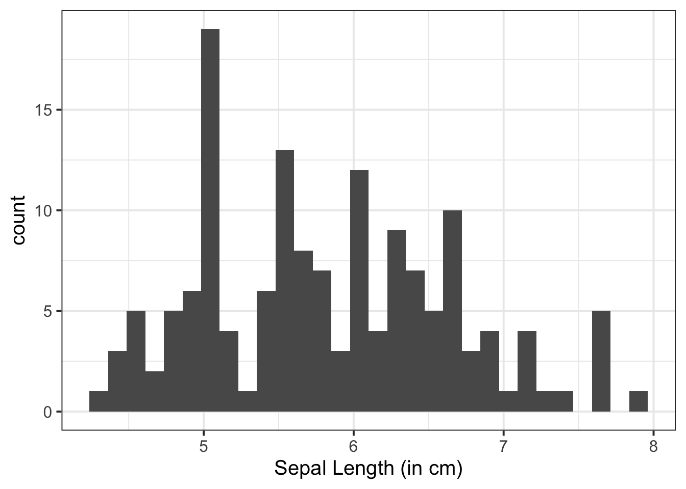
Visual exploration of our data allows us to visualize the distributions of our data, and to identify potential associations among variables.
To visualise (i.e., plot) our data, we can use ggplot() from the tidyverse package. Note the key components of the ggplot() code:
data = where we provide the name of the dataframeaes = where we provide the aesthetics. These are things which we map from the data to the graph. For instance, the \(x\)-axis, or if we wanted to colour the columns/bars according to some aspect of the data+ geom_... = where we add (using +) some geometry. These are the shapes (e.g., bars, points, etc.), which will be put in the correct place according to what we specified in aes()labs() = where we provide labels for our plot (e.g., the \(x\)- and \(y\)-axis)There are lots of arguments that you can further customise, some of which are specified in the examples below e.g., bins =, alpha =, fill =, linewidth =. linetype =, size = etc. For these, you can look up the helper function to see the range of arguments they can take using ? - e.g., ?fill.
If you’d like to read more about ggplot(), there is a handy cheatsheet.
One other thing to consider when visualising your data is how you are going to arrange your plots. Some handy tips on this:
| arranges the plots adjacent to one another, and / arranges the plots on top of one anotherA histogram shows the frequency of values which fall within bins of an equal width.
Basic:
ggplot(data = iris, aes(x = Sepal.Length)) +
geom_histogram() +
labs(x = "Sepal Length (in cm)")
Updating Bins:
Within geom_histogram(), we can specify bins = to specify the number of columns we want (for this example, lets say we want 10):
ggplot(data = iris, aes(x = Sepal.Length)) +
geom_histogram(bins = 10) +
labs(x = "Sepal Length (in cm)")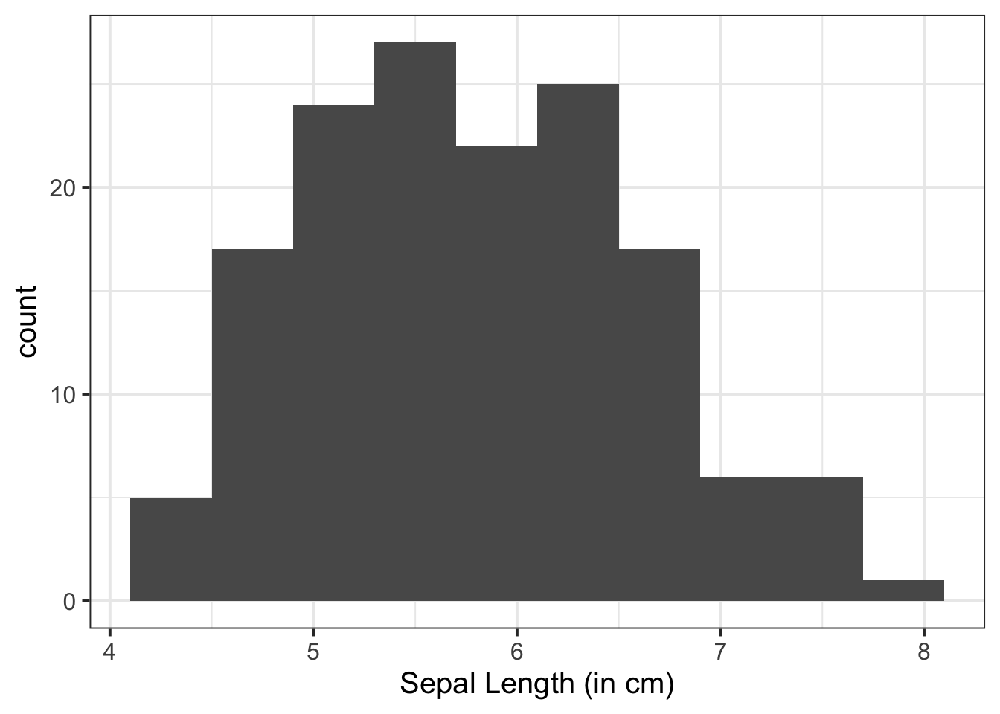
Alternatively, we can specify binwidth = to specify the width of each bin (it is very helpful to be aware of the scale of your variable here!):
ggplot(data = iris, aes(x = Sepal.Length)) +
geom_histogram(binwidth = 0.1) +
labs(x = "Sepal Length (in cm)")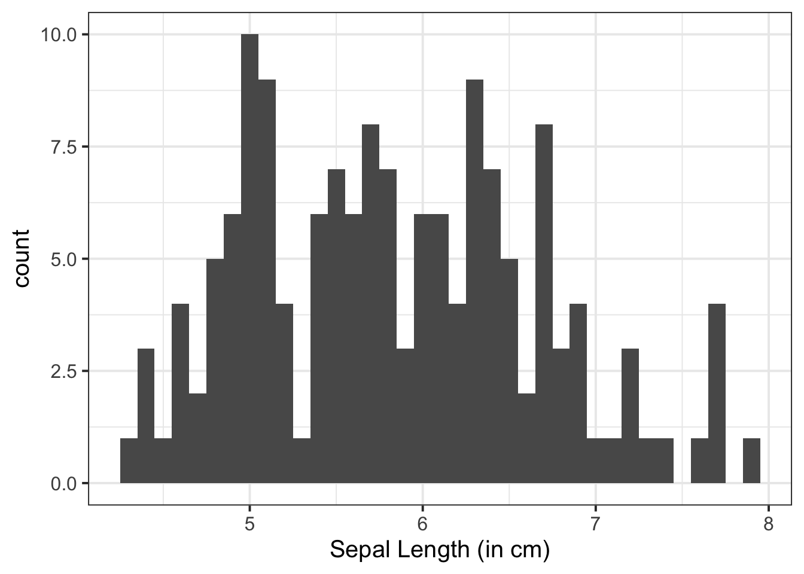
Change colour of columns:
Within geom_histogram(), we can specify fill = to fill the columns with a colour:
ggplot(data = iris, aes(x = Sepal.Length)) +
geom_histogram(fill = "darkred") +
labs(x = "Sepal Length (in cm)")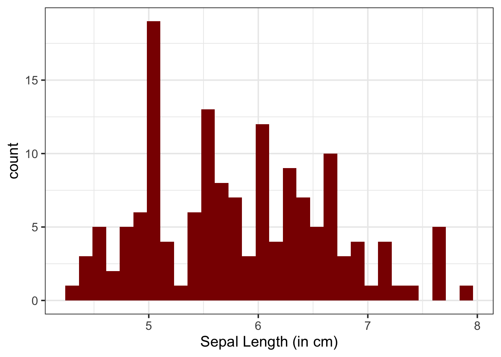
“Density” is a bit similar to the notion of “relative frequency” (or “proportion”), in that for a density curve, the values on the y-axis are scaled so that the total area under the curve is equal to 1. In creating a curve for which the total area underneath is equal to one, we can use the area under the curve in a range of values to indicate the proportion of values in that range.
Basic:
ggplot(data = iris, aes(x = Sepal.Length)) +
geom_density() +
labs(x = "Sepal Length (in cm)")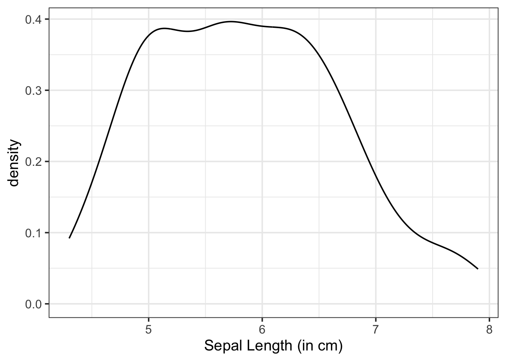
Filled:
We can fill our plot with colour by specifying fill = within geom_density():
ggplot(data = iris, aes(x = Sepal.Length)) +
geom_density(fill = "darkred") +
labs(x = "Sepal Length (in cm)")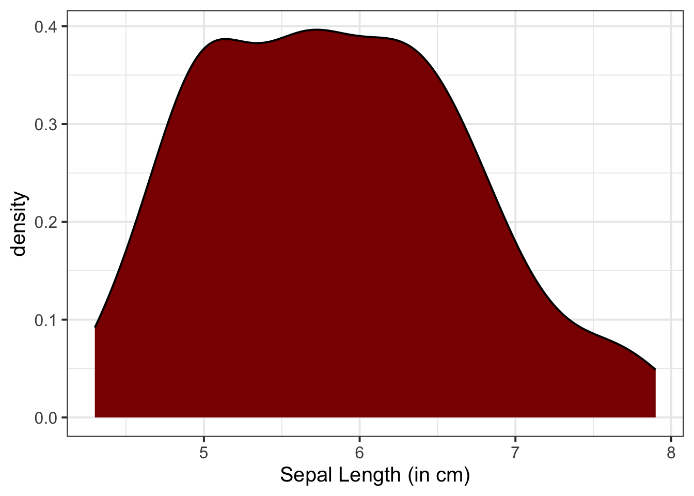
Unlike in our marginal plots where we specified our x-axis variable within aes(), to visualise bivariate associations, we need to specify what variables we want on both our x- and y-axis.
We can use a scatterplot (since the variables are numeric and continuous) to visualise the association between the two numeric variables - these will be our x- and y-axis values.
We plot these values for each row of our dataset, and we should end up with a cloud of scattered points.
Here we will want to comment on any key observations that we notice, including if we detect outliers or points that do not fit with the pattern in the rest of the data. Outliers are extreme observations that are not possible values of a variable or that do not seem to fit with the rest of the data. This could either be:
Basic:
We need to specify + geom_point() to get a scatterplot:
ggplot(data = iris, aes(x = Petal.Length, y = Sepal.Length)) +
geom_point() +
labs(x = "Petal Length (in cm)", y = "Sepal Length (in cm)")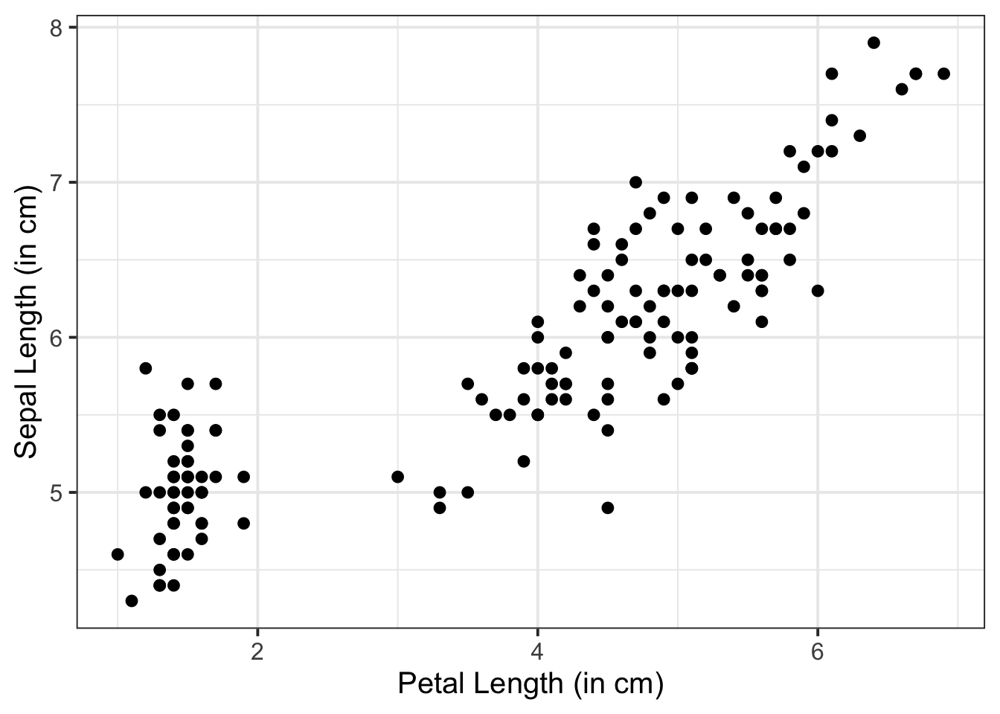
Fill points with colour:
Within geom_point(), we can specify colour = to fill the points with a colour:
ggplot(data = iris, aes(x = Petal.Length, y = Sepal.Length)) +
geom_point(colour = "darkred") +
labs(x = "Petal Length (in cm)", y = "Sepal Length (in cm)")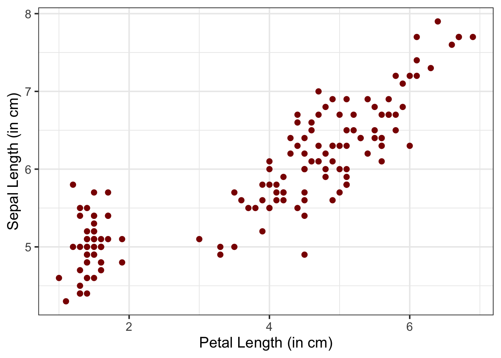
Change size and opacity:
We can change the size (using size =) and the opacity (using alpha =) of our geom elements on the plot. Let’s include this below:
ggplot(data = iris, aes(x = Petal.Length, y = Sepal.Length)) +
geom_point(size = 3, alpha = 0.5) +
labs(x = "Petal Length (in cm)", y = "Sepal Length (in cm)")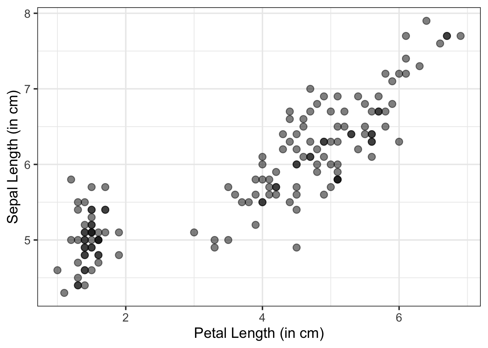
Add a line of best fit:
We can superimpose (i.e., add) a line of best fit by including the argument + geom_smooth(). Since we want to fit a straight line, we want to use method = "lm". We can also specify whether we want to display confidence intervals around our line by specifying se = TRUE / FALSE.
ggplot(data = iris, aes(x = Petal.Length, y = Sepal.Length)) +
geom_point() +
geom_smooth(method = "lm", se = FALSE) +
labs(x = "Petal Length (in cm)", y = "Sepal Length (in cm)")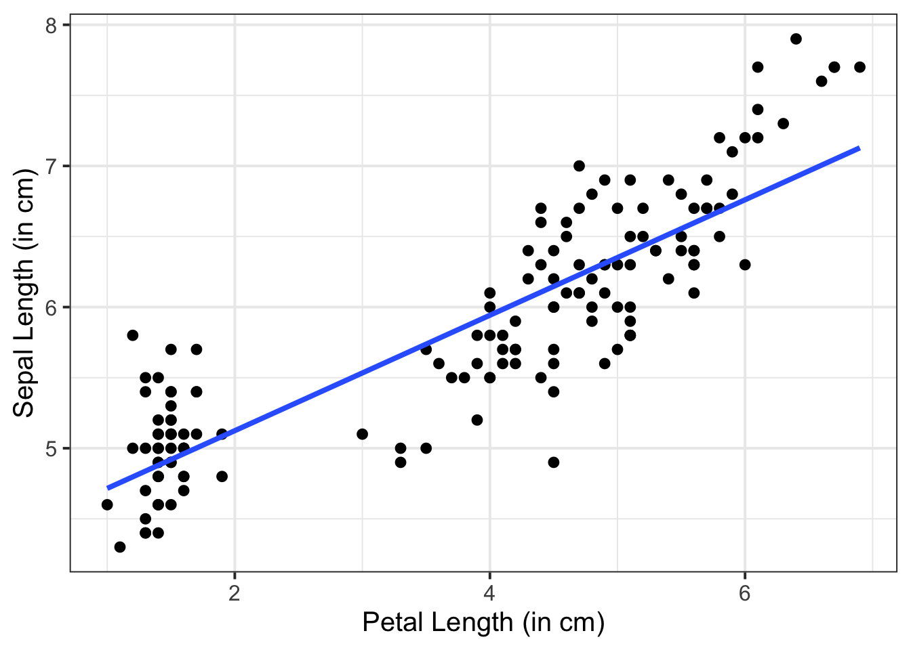
We can use a violin plot to visualise the association between one numeric variable and one categorical variable - these will be our y- and x-axis values respectively. It combines a summary of the data’s range and a kernel density estimation, providing a detailed view of the distribution.
Basic:
We need to specify + geom_violin() to get a violin plot:
ggplot(data = iris, aes(x = Species, y = Sepal.Length)) +
geom_violin() +
labs(x = "Species", y = "Sepal Length (in cm)")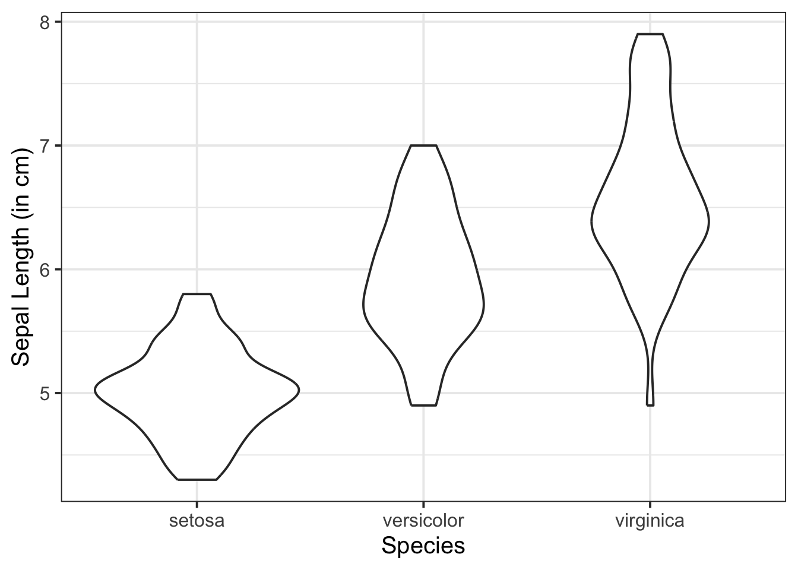
Change violin colours by group:
Within aes(), we can specify fill = to fill the violins with a colour:
ggplot(data = iris, aes(x = Species, y = Sepal.Length, fill = Species)) +
geom_violin() +
labs(x = "Species", y = "Sepal Length (in cm)")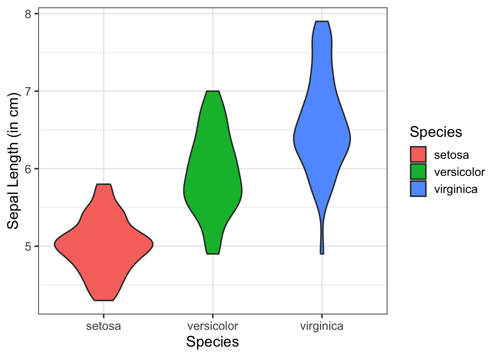
Add jittered points:
Add in the individual data points using geom_jitter(). (Try geom_point() instead and you’ll see why it’s useful to jitter the points off to either side of the vertical centre line.)
ggplot(data = iris, aes(x = Species, y = Sepal.Length, fill = Species)) +
geom_violin() +
geom_jitter() +
labs(x = "Species", y = "Sepal Length (in cm)")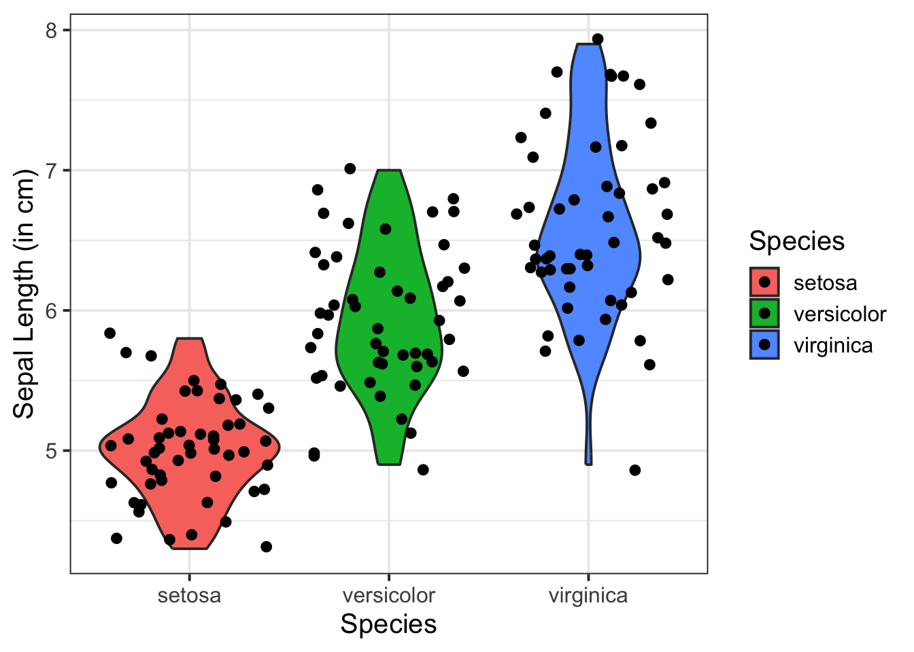
Colour the violin outlines and jittered points, and reduce opacity:
We’ll add colour = Species into aes(), and also add alpha = 0.5 into both geoms, so that we can more clearly see the data when geoms are overlaid.
ggplot(data = iris, aes(x = Species, y = Sepal.Length, fill = Species, colour = Species)) +
geom_violin(alpha = 0.5) +
geom_jitter(alpha = 0.5) +
labs(x = "Species", y = "Sepal Length (in cm)")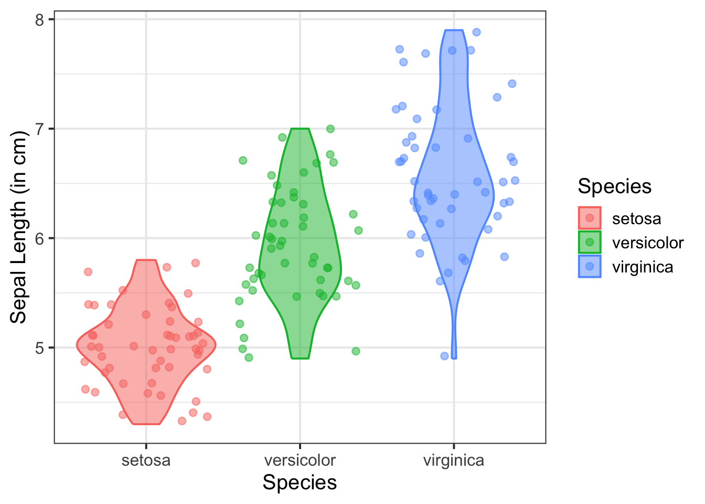
Remove redundant legend:
We can add the argument + theme(legend.position = ) to move (or even remove) the legend by specifying, for example, "right", "left", "top", "bottom", or "none" to remove.
ggplot(data = iris, aes(x = Species, y = Sepal.Length, fill = Species, colour = Species)) +
geom_violin(alpha = 0.5) +
geom_jitter(alpha = 0.5) +
labs(x = "Species", y = "Sepal Length (in cm)") +
theme(legend.position = 'none') 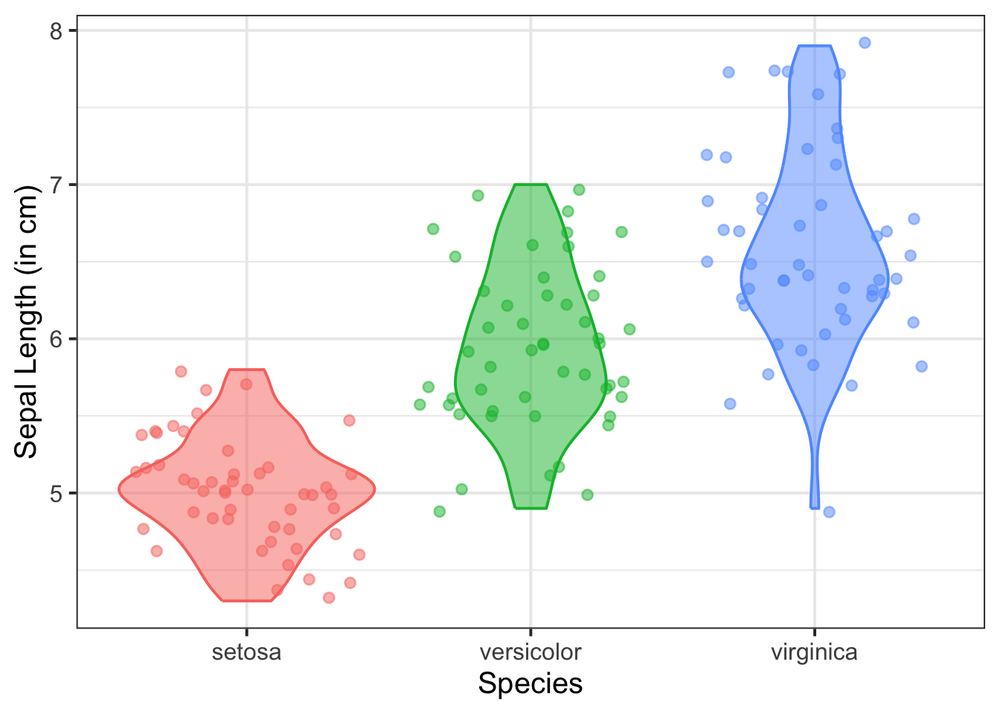
Add group means:
Use stat_summary() to automatically compute and display the means of each Species.
ggplot(data = iris, aes(x = Species, y = Sepal.Length, fill = Species, colour = Species)) +
geom_violin(alpha = 0.5) +
geom_jitter(alpha = 0.5) +
labs(x = "Species", y = "Sepal Length (in cm)") +
theme(legend.position = 'none') +
stat_summary(fun = mean, geom = 'point', colour = 'black', size = 3)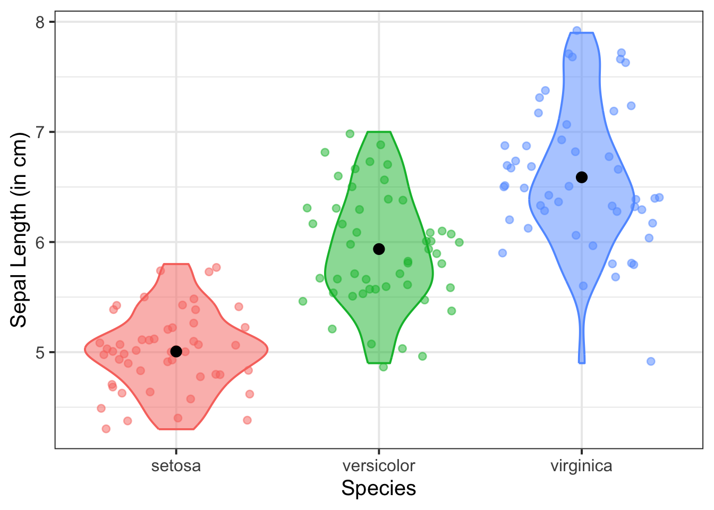
We can use a boxplot to visualise the association between one numeric variable and one categorical variable - these will be our y- and x-axis values respectively. This can be helpful to visually compare the distribution of multiple groups.
Note that boxplots don’t do a good job of representing how variables are actually distributed, so we don’t recommend including a boxplot in your actual written reports. Instead, use a violin plot with jittered points and group means (above).
Basic:
We need to specify + geom_boxplot() to get a boxplot:
ggplot(data = iris, aes(x = Species, y = Sepal.Length)) +
geom_boxplot() +
labs(x = "Species", y = "Sepal Length (in cm)")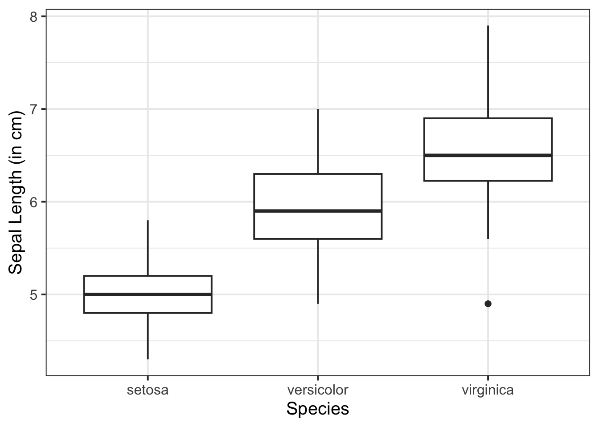
Change boxplot fill colours by group:
Within aes(), we can specify fill = to fill the boxes with a colour:
ggplot(data = iris, aes(x = Species, y = Sepal.Length, fill = Species)) +
geom_boxplot() +
labs(x = "Species", y = "Sepal Length (in cm)")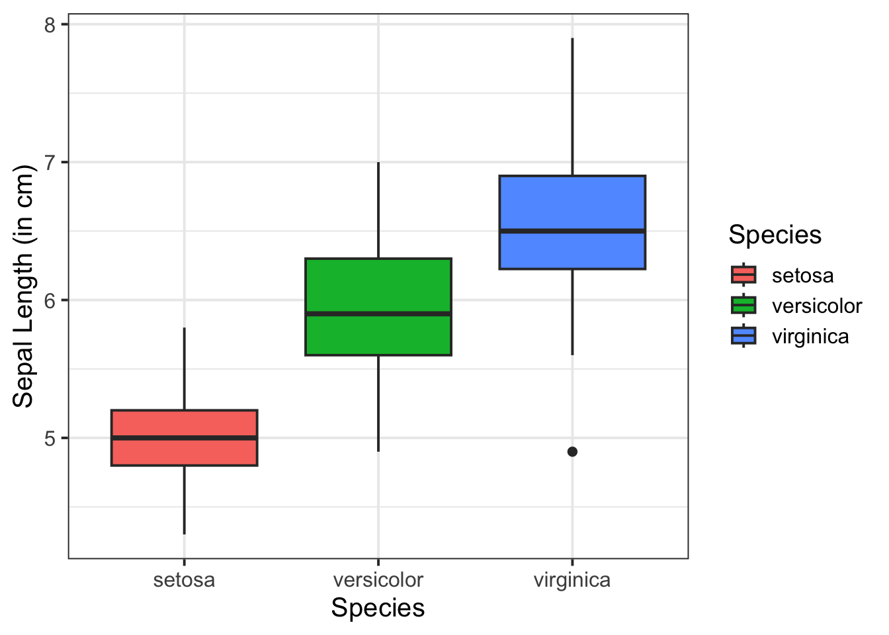
Change boxplot line colours by group:
Within aes(), we can specify colour = to colour the lines with a colour:
ggplot(data = iris, aes(x = Species, y = Sepal.Length, colour = Species)) +
geom_boxplot() +
labs(x = "Species", y = "Sepal Length (in cm)")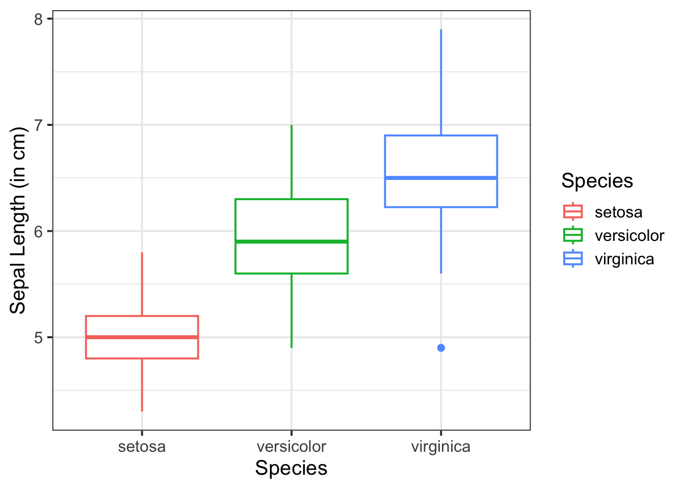
Adding jitter:
We can add jittered points to a boxplot to better see the underlying distribution of the data (by adding a little random variation to each data point) via geom_jitter():
ggplot(data = iris, aes(x = Species, y = Sepal.Length, colour = Species)) +
geom_boxplot() +
geom_jitter() +
labs(x = "Species", y = "Sepal Length (in cm)")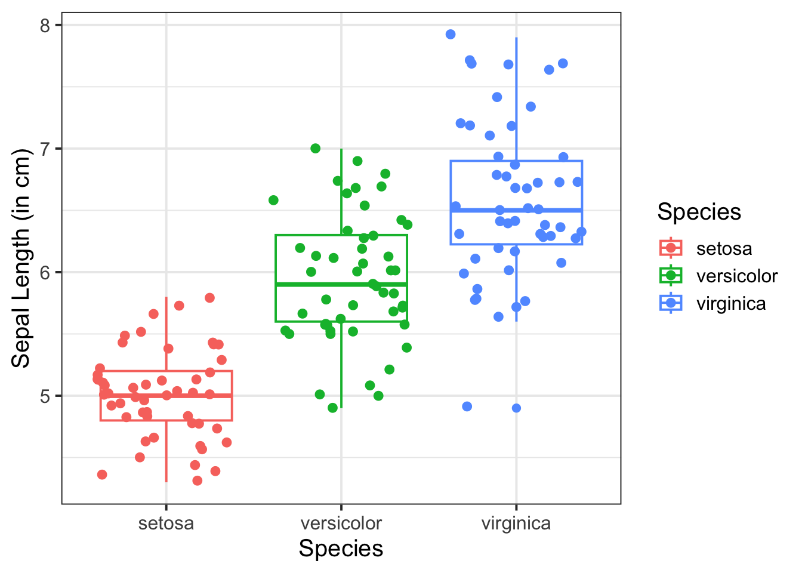
Change legend position:
We can add the argument + theme(legend.position = ) to move (or even remove) the legend by specifying, for example, "right", "left", "top", "bottom", or "none" to remove.
# legend at bottom of plot
ggplot(data = iris, aes(x = Species, y = Sepal.Length, colour = Species)) +
geom_boxplot() +
labs(x = "Species", y = "Sepal Length (in cm)") +
theme(legend.position = "bottom")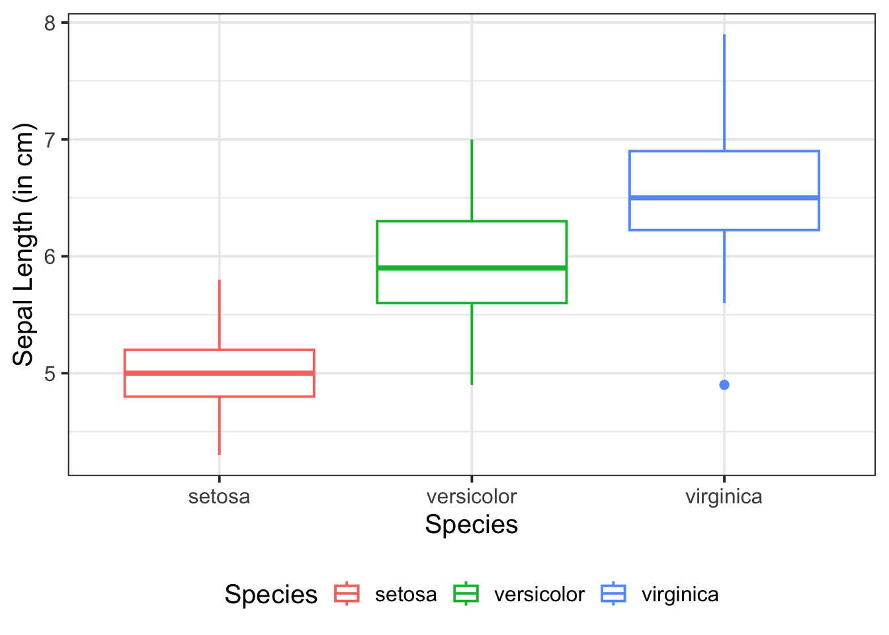
When we have two numeric variables, as well as categorical variables, we can use facet_wrap() / facet_grid() to help divide/arrange our plots. If we had two categorical variables, by simply stringing them together to further group our plots by specifying facet_wrap( ~ cat_variable1 + cat_variable2)
Basic:
We need to specify + geom_point() to get a scatterplot, and either + facet_wrap() or + facet_grid() to separate by your categorical variable:
ggplot(data = iris, aes(x = Petal.Length, y = Sepal.Length)) +
geom_point() +
facet_wrap(~Species) +
labs(x = "Petal Length (in cm)", y = "Sepal Length (in cm)")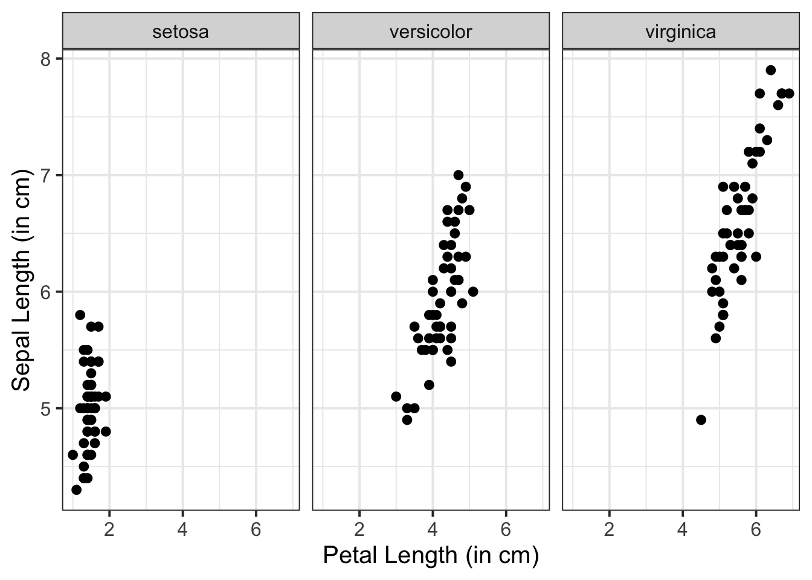
Add a line of best fit:
We can superimpose (i.e., add) a line of best fit by including the argument + geom_smooth(). Since we want to fit a straight line, we want to use method = "lm". We can also specify whether we want to display confidence intervals around our line by specifying se = TRUE / FALSE. Note that a line is fitted for every level of your categorical variable:
ggplot(data = iris, aes(x = Petal.Length, y = Sepal.Length)) +
geom_point() +
geom_smooth(method = "lm", se = FALSE) +
facet_wrap(~Species) +
labs(x = "Petal Length (in cm)", y = "Sepal Length (in cm)")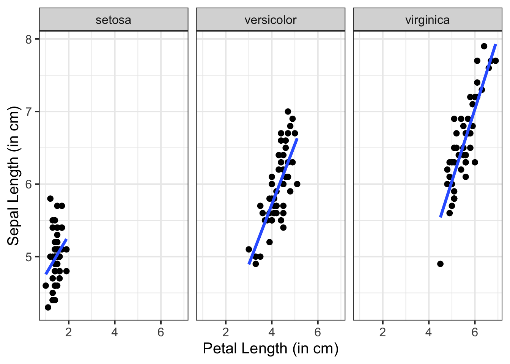